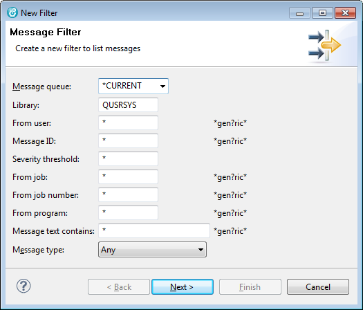
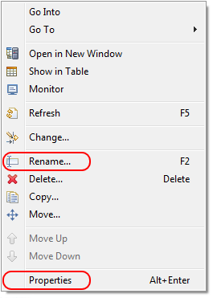

With the iSphere Message Subsystem you can manage and monitor
messages on an IBM i server:
With the iSphere Message Subsystem you can manage and monitor
messages on an IBM i server:
The iSphere Message Subsystem integrates into the Remote Systems Explorer as shown below. From there you can use the context menu (right click)to create message filters or to perform actions on selected messages.

Use the iSphere Messages context menu (right click) to create filters for your messages.

Use the message file context menu (right click) to rename a message filter or to change the filter properties.

Use the message file context menu (right click) to remove or view the message details.

Answer inquiry messages from the message detail dialog:

You can also use the iSphere message subsystem to monitor the message queue of your user profile in the background. When a new message is added to the message queue you can be notified by:
Use the context menu (right click) of the iSphere Messages node to configure the message monitor.

The Login credentials are optional and must be specified only for email servers that require an authenticated user for sending emails.
| Notice: The email password is stored in the Eclipse secure
storage area. See: Windows | Preferences | General | Security | Secure Storage |
| Important: Eclipse 3.2, which is used by WDSCi, does not have a secure storage container. Here the password is encrypted and stored by iSphere, which might not be as secure as the Eclipse secure storage area. |
The message monitor requires an exclusive lock on your message queue. It will not get the lock if the message queue is locked by another job, such as a 5250 session. Therefore it is recommended you start RDi/WDSCi before any 5250 session. But you can also use the following CL command to unlock the message queue:
| DLCOBJ OBJ((library_name/message_queue_name *MSGQ *EXCL)) SCOPE(*THREAD) |
The command must be executed from the job that holds the lock.
The message queue is not immediately unlocked when option Monitor message queue is unchecked. It can take up to 20 seconds until the lock has been removed.
Actually messages cannot be removed from a monitored message queue, because the Java message queue class puts an *EXCL lock on the message queue when it waits for incoming messages. But you can get around that limitation by sending a *REMOVE_ALL message to the message queue to make the message monitor remove all messages from the queue:
| SNDMSG MSG('*REMOVE_ALL') TOUSR(user_profile) |
Message monitoring ends, when the Monitor message queue checkbox is unchecked. That may take up to 20 seconds, because of the receive message timeout. You can also end the message monitor from a 5250 command line or any program by sending *END_MONITORING to a monitored message queue like this:
| SNDMSG MSG('*END_MONITORING') TOUSR(user_profile) |
You need to check the Monitor message queue checkbox again to start the message monitor again.
Over several months, many on the WDSC_L mailing list at midrange.com have asked us to adopt the Message Subsystem feature from the RSE Extensions Plug-in of Softlandings Systems.
In our opinion, forking another open source project is difficult, but sometimes there are good reasons to do this. If the original contributor cannot provide further support and enhancements, for whatever reasons, it benefits the community if others are willing to do this. This is the spirit of open source and everyone who starts an open source project has to be aware of this.
So, we decided to adopt the Message Subsystem feature from the RSE Extensions Plugin to iSphere. If anyone has a feature request regarding the Message Subsystem, please let us know immediately.